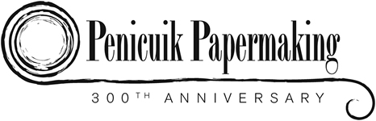
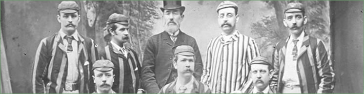

Penicuik Cricket Club
 |
{kind=link}
The Early History of the Penicuik Cricket Club Cricket was introduced to Penicuik by an Englishman from Kent called Charles W Green. He was a foreman papermaker at Valleyfield Mill and, with the support of some local gentlemen, formed the Club in 1844. The first team was made up entirely of papermakers:- Messrs Green (Captain), Slight, Dewar, Paterson, D Shanks, Skinner, Hislop, McIntosh, McNab, Simpson and Meggat. Other players who joined later on were Hugh Sommerville of Dalmore and Captains Dowbiggin, Ramsay and Williams from Greenlaw (now Glencorse). Sir John Cowan of Beeslack and individuals from the firm of Alex Cowan & Sons supported the Club. Later on in the 1860s, prominent locals such as Sir George D Clerk, his two cousins – sons of John Clerk, Esq,QC and C W Cowan became members of the Club. Finding a pitch close to the village proved difficult. The Club moved several times during the first 30 years. Denholm’s Park was the first pitch. It was a far from level playing field on the opposite side of the River Esk from the village and mills, between Pomathorn and Loanstone. The Club then moved west to Halls Farm off the road to Peebles which was even further away from the village. Next the Club moved to Brown’s Park in the Shottstown area where the Kirklands housing scheme now stands. The Club also played at Symington’s Park (which became the builder’s yard of James Tait & Co) in 1861, the Royal Hotel Park in 1869, and at the top of Eastfield near Dunlop Terrace in 1871. Finally, in 1874, Sir George Clerk was approached and he generously agreed to put the Kirkhill ground at the Club’s disposal at a nominal rent. Under the direction of the Captain, J S Armstrong, a pitch was laid out and a pavilion erected for the 1875 season. At first the Club played against teams from the Edinburgh District, Leith, Prestonpans, Dalkeith and Lasswade. Early matches were of 2 innings a side and the first scores that has been traced are of a game which took place at Prestonpans in 1848. The result was a win for Penicuik, who totalled 122 runs to Prestonpans’ 71. Skinner of Penicuik made the top score of 37. Charles W Green was a very successful player for the Club. He was a good batsman and round armed bowler, the only on in the team. Most bowlers bowled underhand. The first extant Penicuik scorecard is of a match in 1853 at home to Dalkeith when both sides had only 10 players. Dalkeith scored 18 and 46 while Penicuik made 60 and 6 for 2, thus winning well by 7 wickets. Green opened the batting in the first innings and was bowled for 9. Ramsay top scored with 21. By 1861, with the exception of D Shanks, there was a completely new set of players. They were: J Steele, R Barton, A Simpson, Alex Robertson (whose son and grandson also played for the Club), J Watson, J Blackie, P Borrowman, R S Hogg and J S Armstrong. During the early years the Club colours changed significantly. This was from a yellow shirt trimmed with black, usual white trousers, cap and jacket to match around 1865, to blue and white in 1870, bright maroon in 1880 and finally to the present colours of maroon and gold in 1894. |


Penicuik Historical Society :: Penicuik Town Hall :: 33 High Street :: Penicuik :: EH26 8HS
e-mail :: info@penicuikpapermaking.org
e-mail :: info@penicuikpapermaking.org
© Penicuik Historical Society :: site by Wallace Web Design